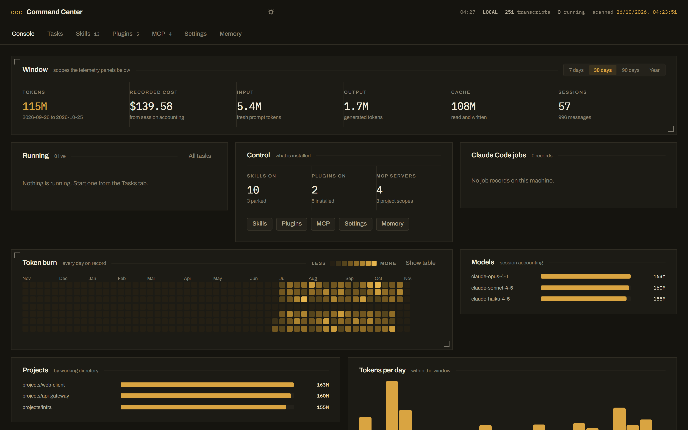
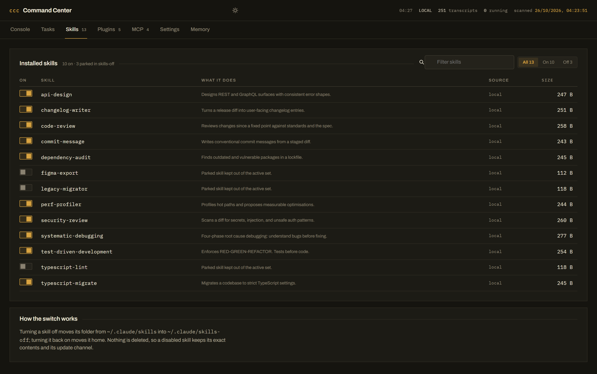
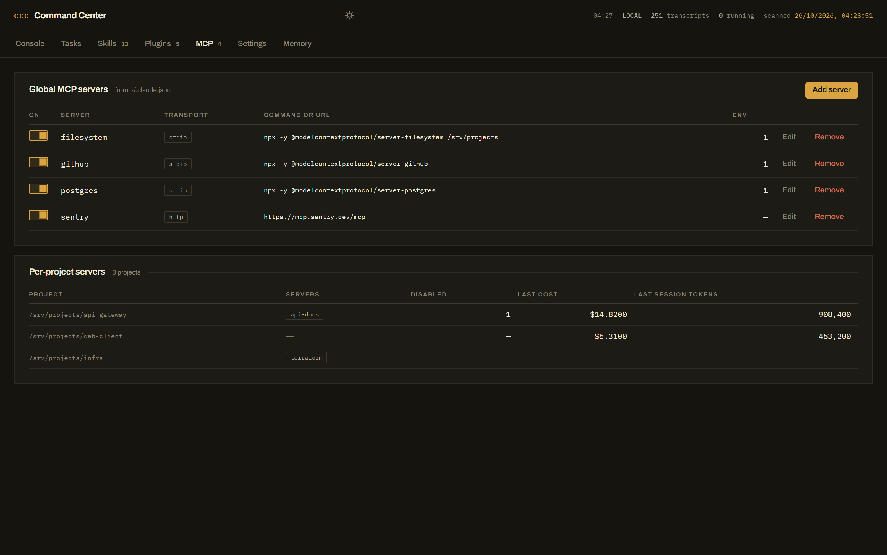

Console
reads
Every transcript under ~/.claude/projects, the job records, the running tasks.
writes
Nothing. The console is a window, not a hand.
FIELD MANUAL · MISSION 01 · LOCAL ONLY
Claude Code is a CLI with real state — settings.json, skill folders, a plugin registry, MCP server definitions, memory files, and one JSONL transcript per session. All of it on disk. None of it visible.
Captain Code is the control room that reads those exact files and writes back to them — on your machine, on loopback, with nothing uploaded and no account to create.
Chapter 01 — The Situation
The CLI is excellent at doing the work and terrible at telling you the state of the install. You know the skills are there. You do not know which are enabled, which are parked, which plugins are switched on, what the MCP servers point at, or what last month cost.
So the state lives on disk, unread, until a tool writes a new line into it. The Captain Command Centre reads the same files the tool reads, in the same machine — no wrapper, no exported report, no second source of truth.
125 chars · hiddenChapter 02 — The Console
reads
Every transcript under ~/.claude/projects, the job records, the running tasks.
writes
Nothing. The console is a window, not a hand.
reads
Job records, live processes on the box, tasks this dashboard started.
writes
Starts and stops headless claude runs.
reads
~/.claude/skills and ~/.claude/skills-off.
writes
Moves a folder between the two. Never deletes.
reads
installed_plugins.json and the marketplace catalogue.
writes
enabledPlugins in settings.json.
reads
mcpServers in ~/.claude.json, global and per project.
writes
Same file, plus the parked-servers file.
reads
settings.json, settings.local.json, CLAUDE.md, access config.
writes
All of them — with a backup on every change.
reads
~/.claude/memory and every project memory folder.
writes
The memory files themselves.
Chapter 03 — The Mission
Clone, install, build, serve. One command if you let the installer do it.
git clone https://github.com/aswathas/claude-command-center.git
cd claude-command-center
npm install
npm run build
npm startWindows: start.cmd does it in one click. macOS/Linux: ./scripts/install.sh.
By default the console reads ~/.claude and ~/.claude.json — the
install you already have, auto-detected. Point it somewhere else with two environment
variables: a scratch profile, a second machine, a test rig.
CLAUDE_HOME=/path/to/.claude \
CLAUDE_JSON=/path/to/.claude.json \
npm startRun npm run doctor first — it prints the exact paths it detected, and whether they hold skills, plugins, MCP servers and transcripts.
http://127.0.0.1:8787. Loopback only. Nothing on the network can reach it
until you say otherwise. For live development, npm run dev runs the API on
8787 and Vite on 5173 with hot reload.
Toggle a skill, park a plugin, add an MCP server, edit a setting, rewrite a memory file.
Every change writes the real file and drops a .bak.<timestamp> beside it.
Secrets read back masked, and merged back in place on save — a round-trip can never
replace a live token with a placeholder.
Settings → Phone access puts the console on your LAN address, with a QR code in the panel and an access code every request must carry. The phone answers the only question that matters at 1am: is it still going? Switch phone access off and the console closes to the outside world immediately.
Chapter 04 — The Oath
~/.claude/credentials.json is refused, not skipped.125 chars · hidden.settings.json.bak.<timestamp> sits beside the file it replaced.~/.claude.json.Chapter 05 — The Ledger
Claude Code writes one JSONL transcript per session. Every assistant message carries a
usage block, and each session ends with a cost-state record holding
Claude Code's own accounting.
The detail that took the longest: the same API message can be written more than once inside a
transcript, so naive summing inflates your token count. The indexer dedups on
(sessionId, message.id), and takes cost from the session's own cost-state record
when it has one — so the dashboard cannot disagree with the tool about the same history.

Chapter 06 — Stations 03, 04, 05

skills-off.
MISSION COMPLETE · DEPLOY THE CONSOLE
Free, MIT licensed, runs entirely on your machine. Bring your own Claude Code — it reads the files you already have.